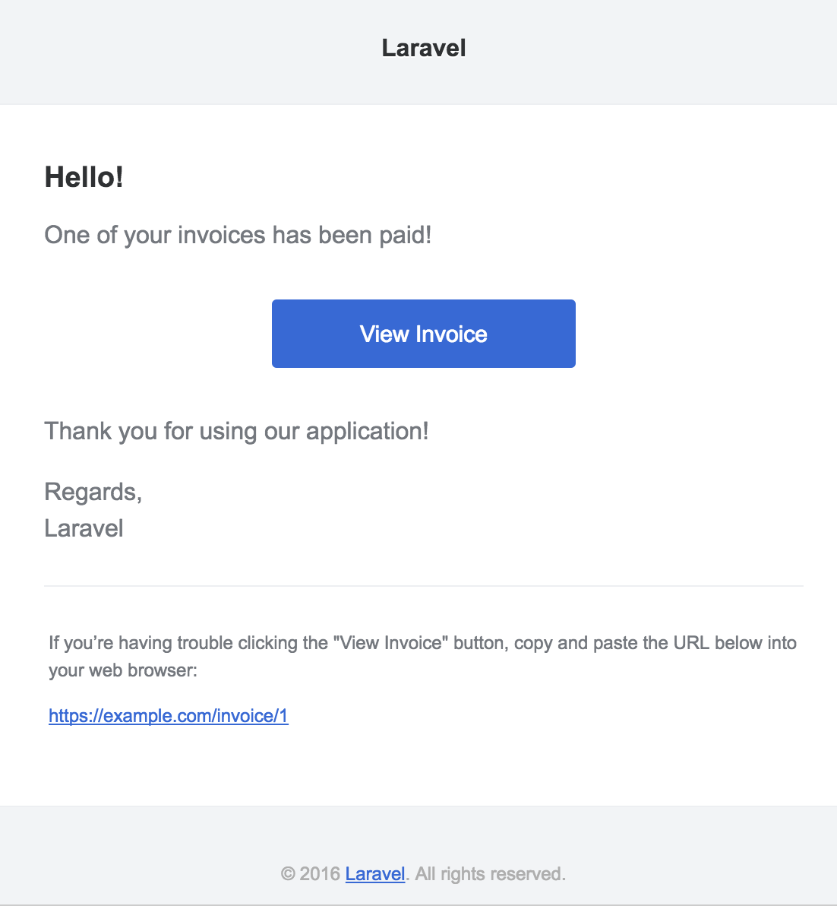

Notifications
- Introduction
- Creating Notifications
- Sending Notifications
- Mail Notifications
- Markdown Mail Notifications
- Database Notifications
- Broadcast Notifications
- SMS Notifications
- Slack Notifications
- Localizing Notifications
- Notification Events
- Custom Channels
Introduction
In addition to support for sending email, Laravel provides support for sending notifications across a variety of delivery channels, including mail, SMS (via Nexmo), and Slack. Notifications may also be stored in a database so they may be displayed in your web interface.
Typically, notifications should be short, informational messages that notify users of something that occurred in your application. For example, if you are writing a billing application, you might send an "Invoice Paid" notification to your users via the email and SMS channels.
Creating Notifications
In Laravel, each notification is represented by a single class (typically stored in the app/Notifications directory). Don't worry if you don't see this directory in your application, it will be created for you when you run the make:notification Artisan command:
php artisan make:notification InvoicePaidThis command will place a fresh notification class in your app/Notifications directory. Each notification class contains a via method and a variable number of message building methods (such as toMail or toDatabase) that convert the notification to a message optimized for that particular channel.
Sending Notifications
Using The Notifiable Trait
Notifications may be sent in two ways: using the notify method of the Notifiable trait or using the Notification facade. First, let's explore using the trait:
<?php
namespace App;
use Illuminate\Notifications\Notifiable;
use Illuminate\Foundation\Auth\User as Authenticatable;
class User extends Authenticatable
{
use Notifiable;
}This trait is utilized by the default App\User model and contains one method that may be used to send notifications: notify. The notify method expects to receive a notification instance:
use App\Notifications\InvoicePaid;
$user->notify(new InvoicePaid($invoice));{tip} Remember, you may use the
Illuminate\Notifications\Notifiabletrait on any of your models. You are not limited to only including it on yourUsermodel.
Using The Notification Facade
Alternatively, you may send notifications via the Notification facade. This is useful primarily when you need to send a notification to multiple notifiable entities such as a collection of users. To send notifications using the facade, pass all of the notifiable entities and the notification instance to the send method:
Notification::send($users, new InvoicePaid($invoice));Specifying Delivery Channels
Every notification class has a via method that determines on which channels the notification will be delivered. Notifications may be sent on the mail, database, broadcast, nexmo, and slack channels.
{tip} If you would like to use other delivery channels such as Telegram or Pusher, check out the community driven Laravel Notification Channels website.
The via method receives a $notifiable instance, which will be an instance of the class to which the notification is being sent. You may use $notifiable to determine which channels the notification should be delivered on:
/**
* Get the notification's delivery channels.
*
* @param mixed $notifiable
* @return array
*/
public function via($notifiable)
{
return $notifiable->prefers_sms ? ['nexmo'] : ['mail', 'database'];
}Queueing Notifications
{note} Before queueing notifications you should configure your queue and start a worker.
Sending notifications can take time, especially if the channel needs an external API call to deliver the notification. To speed up your application's response time, let your notification be queued by adding the ShouldQueue interface and Queueable trait to your class. The interface and trait are already imported for all notifications generated using make:notification, so you may immediately add them to your notification class:
<?php
namespace App\Notifications;
use Illuminate\Bus\Queueable;
use Illuminate\Notifications\Notification;
use Illuminate\Contracts\Queue\ShouldQueue;
class InvoicePaid extends Notification implements ShouldQueue
{
use Queueable;
// ...
}Once the ShouldQueue interface has been added to your notification, you may send the notification like normal. Laravel will detect the ShouldQueue interface on the class and automatically queue the delivery of the notification:
$user->notify(new InvoicePaid($invoice));If you would like to delay the delivery of the notification, you may chain the delay method onto your notification instantiation:
$when = now()->addMinutes(10);
$user->notify((new InvoicePaid($invoice))->delay($when));On-Demand Notifications
Sometimes you may need to send a notification to someone who is not stored as a "user" of your application. Using the Notification::route method, you may specify ad-hoc notification routing information before sending the notification:
Notification::route('mail', 'taylor@example.com')
->route('nexmo', '5555555555')
->notify(new InvoicePaid($invoice));Mail Notifications
Formatting Mail Messages
If a notification supports being sent as an email, you should define a toMail method on the notification class. This method will receive a $notifiable entity and should return a Illuminate\Notifications\Messages\MailMessage instance. Mail messages may contain lines of text as well as a "call to action". Let's take a look at an example toMail method:
/**
* Get the mail representation of the notification.
*
* @param mixed $notifiable
* @return \Illuminate\Notifications\Messages\MailMessage
*/
public function toMail($notifiable)
{
$url = url('/invoice/'.$this->invoice->id);
return (new MailMessage)
->greeting('Hello!')
->line('One of your invoices has been paid!')
->action('View Invoice', $url)
->line('Thank you for using our application!');
}{tip} Note we are using
$this->invoice->idin ourtoMailmethod. You may pass any data your notification needs to generate its message into the notification's constructor.
In this example, we register a greeting, a line of text, a call to action, and then another line of text. These methods provided by the MailMessage object make it simple and fast to format small transactional emails. The mail channel will then translate the message components into a nice, responsive HTML email template with a plain-text counterpart. Here is an example of an email generated by the mail channel:

{tip} When sending mail notifications, be sure to set the
namevalue in yourconfig/app.phpconfiguration file. This value will be used in the header and footer of your mail notification messages.
Other Notification Formatting Options
Instead of defining the "lines" of text in the notification class, you may use the view method to specify a custom template that should be used to render the notification email:
/**
* Get the mail representation of the notification.
*
* @param mixed $notifiable
* @return \Illuminate\Notifications\Messages\MailMessage
*/
public function toMail($notifiable)
{
return (new MailMessage)->view(
'emails.name', ['invoice' => $this->invoice]
);
}In addition, you may return a mailable object from the toMail method:
use App\Mail\InvoicePaid as Mailable;
/**
* Get the mail representation of the notification.
*
* @param mixed $notifiable
* @return Mailable
*/
public function toMail($notifiable)
{
return (new Mailable($this->invoice))->to($this->user->email);
}Error Messages
Some notifications inform users of errors, such as a failed invoice payment. You may indicate that a mail message is regarding an error by calling the error method when building your message. When using the error method on a mail message, the call to action button will be red instead of blue:
/**
* Get the mail representation of the notification.
*
* @param mixed $notifiable
* @return \Illuminate\Notifications\Message
*/
public function toMail($notifiable)
{
return (new MailMessage)
->error()
->subject('Notification Subject')
->line('...');
}Customizing The Sender
By default, the email's sender / from address is defined in the config/mail.php configuration file. However, you may specify the from address for a specific notification using the from method:
/**
* Get the mail representation of the notification.
*
* @param mixed $notifiable
* @return \Illuminate\Notifications\Messages\MailMessage
*/
public function toMail($notifiable)
{
return (new MailMessage)
->from('test@example.com', 'Example')
->line('...');
}Customizing The Recipient
When sending notifications via the mail channel, the notification system will automatically look for an email property on your notifiable entity. You may customize which email address is used to deliver the notification by defining a routeNotificationForMail method on the entity:
<?php
namespace App;
use Illuminate\Notifications\Notifiable;
use Illuminate\Foundation\Auth\User as Authenticatable;
class User extends Authenticatable
{
use Notifiable;
/**
* Route notifications for the mail channel.
*
* @param \Illuminate\Notifications\Notification $notification
* @return string
*/
public function routeNotificationForMail($notification)
{
return $this->email_address;
}
}Customizing The Subject
By default, the email's subject is the class name of the notification formatted to "title case". So, if your notification class is named InvoicePaid, the email's subject will be Invoice Paid. If you would like to specify an explicit subject for the message, you may call the subject method when building your message:
/**
* Get the mail representation of the notification.
*
* @param mixed $notifiable
* @return \Illuminate\Notifications\Messages\MailMessage
*/
public function toMail($notifiable)
{
return (new MailMessage)
->subject('Notification Subject')
->line('...');
}Customizing The Templates
You can modify the HTML and plain-text template used by mail notifications by publishing the notification package's resources. After running this command, the mail notification templates will be located in the resources/views/vendor/notifications directory:
php artisan vendor:publish --tag=laravel-notificationsMarkdown Mail Notifications
Markdown mail notifications allow you to take advantage of the pre-built templates of mail notifications, while giving you more freedom to write longer, customized messages. Since the messages are written in Markdown, Laravel is able to render beautiful, responsive HTML templates for the messages while also automatically generating a plain-text counterpart.
Generating The Message
To generate a notification with a corresponding Markdown template, you may use the --markdown option of the make:notification Artisan command:
php artisan make:notification InvoicePaid --markdown=mail.invoice.paidLike all other mail notifications, notifications that use Markdown templates should define a toMail method on their notification class. However, instead of using the line and action methods to construct the notification, use the markdown method to specify the name of the Markdown template that should be used:
/**
* Get the mail representation of the notification.
*
* @param mixed $notifiable
* @return \Illuminate\Notifications\Messages\MailMessage
*/
public function toMail($notifiable)
{
$url = url('/invoice/'.$this->invoice->id);
return (new MailMessage)
->subject('Invoice Paid')
->markdown('mail.invoice.paid', ['url' => $url]);
}Writing The Message
Markdown mail notifications use a combination of Blade components and Markdown syntax which allow you to easily construct notifications while leveraging Laravel's pre-crafted notification components:
@component('mail::message')
# Invoice Paid
Your invoice has been paid!
@component('mail::button', ['url' => $url])
View Invoice
@endcomponent
Thanks,<br>
{{ config('app.name') }}
@endcomponentButton Component
The button component renders a centered button link. The component accepts two arguments, a url and an optional color. Supported colors are blue, green, and red. You may add as many button components to a notification as you wish:
@component('mail::button', ['url' => $url, 'color' => 'green'])
View Invoice
@endcomponentPanel Component
The panel component renders the given block of text in a panel that has a slightly different background color than the rest of the notification. This allows you to draw attention to a given block of text:
@component('mail::panel')
This is the panel content.
@endcomponentTable Component
The table component allows you to transform a Markdown table into an HTML table. The component accepts the Markdown table as its content. Table column alignment is supported using the default Markdown table alignment syntax:
@component('mail::table')
| Laravel | Table | Example |
| ------------- |:-------------:| --------:|
| Col 2 is | Centered | $10 |
| Col 3 is | Right-Aligned | $20 |
@endcomponentCustomizing The Components
You may export all of the Markdown notification components to your own application for customization. To export the components, use the vendor:publish Artisan command to publish the laravel-mail asset tag:
php artisan vendor:publish --tag=laravel-mailThis command will publish the Markdown mail components to the resources/views/vendor/mail directory. The mail directory will contain an html and a markdown directory, each containing their respective representations of every available component. You are free to customize these components however you like.
Customizing The CSS
After exporting the components, the resources/views/vendor/mail/html/themes directory will contain a default.css file. You may customize the CSS in this file and your styles will automatically be in-lined within the HTML representations of your Markdown notifications.
{tip} If you would like to build an entirely new theme for the Markdown components, write a new CSS file within the
html/themesdirectory and change thethemeoption of your
Database Notifications
Prerequisites
The database notification channel stores the notification information in a database table. This table will contain information such as the notification type as well as custom JSON data that describes the notification.
You can query the table to display the notifications in your application's user interface. But, before you can do that, you will need to create a database table to hold your notifications. You may use the notifications:table command to generate a migration with the proper table schema:
php artisan notifications:table
php artisan migrateFormatting Database Notifications
If a notification supports being stored in a database table, you should define a toDatabase or toArray method on the notification class. This method will receive a $notifiable entity and should return a plain PHP array. The returned array will be encoded as JSON and stored in the data column of your notifications table. Let's take a look at an example toArray method:
/**
* Get the array representation of the notification.
*
* @param mixed $notifiable
* @return array
*/
public function toArray($notifiable)
{
return [
'invoice_id' => $this->invoice->id,
'amount' => $this->invoice->amount,
];
}toDatabase Vs. toArray
The toArray method is also used by the broadcast channel to determine which data to broadcast to your JavaScript client. If you would like to have two different array representations for the database and broadcast channels, you should define a toDatabase method instead of a toArray method.
Accessing The Notifications
Once notifications are stored in the database, you need a convenient way to access them from your notifiable entities. The Illuminate\Notifications\Notifiable trait, which is included on Laravel's default App\User model, includes a notifications Eloquent relationship that returns the notifications for the entity. To fetch notifications, you may access this method like any other Eloquent relationship. By default, notifications will be sorted by the created_at timestamp:
$user = App\User::find(1);
foreach ($user->notifications as $notification) {
echo $notification->type;
}If you want to retrieve only the "unread" notifications, you may use the unreadNotifications relationship. Again, these notifications will be sorted by the created_at timestamp:
$user = App\User::find(1);
foreach ($user->unreadNotifications as $notification) {
echo $notification->type;
}{tip} To access your notifications from your JavaScript client, you should define a notification controller for your application which returns the notifications for a notifiable entity, such as the current user. You may then make an HTTP request to that controller's URI from your JavaScript client.
Marking Notifications As Read
Typically, you will want to mark a notification as "read" when a user views it. The Illuminate\Notifications\Notifiable trait provides a markAsRead method, which updates the read_at column on the notification's database record:
$user = App\User::find(1);
foreach ($user->unreadNotifications as $notification) {
$notification->markAsRead();
}However, instead of looping through each notification, you may use the markAsRead method directly on a collection of notifications:
$user->unreadNotifications->markAsRead();You may also use a mass-update query to mark all of the notifications as read without retrieving them from the database:
$user = App\User::find(1);
$user->unreadNotifications()->update(['read_at' => now()]);You may delete the notifications to remove them from the table entirely:
$user->notifications()->delete();Broadcast Notifications
Prerequisites
Before broadcasting notifications, you should configure and be familiar with Laravel's event broadcasting services. Event broadcasting provides a way to react to server-side fired Laravel events from your JavaScript client.
Formatting Broadcast Notifications
The broadcast channel broadcasts notifications using Laravel's event broadcasting services, allowing your JavaScript client to catch notifications in realtime. If a notification supports broadcasting, you should define a toBroadcast method on the notification class. This method will receive a $notifiable entity and should return a BroadcastMessage instance. The returned data will be encoded as JSON and broadcast to your JavaScript client. Let's take a look at an example toBroadcast method:
use Illuminate\Notifications\Messages\BroadcastMessage;
/**
* Get the broadcastable representation of the notification.
*
* @param mixed $notifiable
* @return BroadcastMessage
*/
public function toBroadcast($notifiable)
{
return new BroadcastMessage([
'invoice_id' => $this->invoice->id,
'amount' => $this->invoice->amount,
]);
}Broadcast Queue Configuration
All broadcast notifications are queued for broadcasting. If you would like to configure the queue connection or queue name that is used to queue the broadcast operation, you may use the onConnection and onQueue methods of the BroadcastMessage:
return (new BroadcastMessage($data))
->onConnection('sqs')
->onQueue('broadcasts');{tip} In addition to the data you specify, broadcast notifications will also contain a
typefield containing the class name of the notification.
Listening For Notifications
Notifications will broadcast on a private channel formatted using a {notifiable}.{id} convention. So, if you are sending a notification to a App\User instance with an ID of 1, the notification will be broadcast on the App.User.1 private channel. When using Laravel Echo, you may easily listen for notifications on a channel using the notification helper method:
Echo.private('App.User.' + userId)
.notification((notification) => {
console.log(notification.type);
});Customizing The Notification Channel
If you would like to customize which channels a notifiable entity receives its broadcast notifications on, you may define a receivesBroadcastNotificationsOn method on the notifiable entity:
<?php
namespace App;
use Illuminate\Notifications\Notifiable;
use Illuminate\Broadcasting\PrivateChannel;
use Illuminate\Foundation\Auth\User as Authenticatable;
class User extends Authenticatable
{
use Notifiable;
/**
* The channels the user receives notification broadcasts on.
*
* @return string
*/
public function receivesBroadcastNotificationsOn()
{
return 'users.'.$this->id;
}
}SMS Notifications
Prerequisites
Sending SMS notifications in Laravel is powered by Nexmo. Before you can send notifications via Nexmo, you need to install the laravel/nexmo-notification-channel Composer package:
composer require laravel/nexmo-notification-channelNext, you will need to add a few configuration options to your config/services.php configuration file. You may copy the example configuration below to get started:
'nexmo' => [
'key' => env('NEXMO_KEY'),
'secret' => env('NEXMO_SECRET'),
'sms_from' => '15556666666',
],The sms_from option is the phone number that your SMS messages will be sent from. You should generate a phone number for your application in the Nexmo control panel.
Formatting SMS Notifications
If a notification supports being sent as an SMS, you should define a toNexmo method on the notification class. This method will receive a $notifiable entity and should return a Illuminate\Notifications\Messages\NexmoMessage instance:
/**
* Get the Nexmo / SMS representation of the notification.
*
* @param mixed $notifiable
* @return NexmoMessage
*/
public function toNexmo($notifiable)
{
return (new NexmoMessage)
->content('Your SMS message content');
}Unicode Content
If your SMS message will contain unicode characters, you should call the unicode method when constructing the NexmoMessage instance:
/**
* Get the Nexmo / SMS representation of the notification.
*
* @param mixed $notifiable
* @return NexmoMessage
*/
public function toNexmo($notifiable)
{
return (new NexmoMessage)
->content('Your unicode message')
->unicode();
}Customizing The "From" Number
If you would like to send some notifications from a phone number that is different from the phone number specified in your config/services.php file, you may use the from method on a NexmoMessage instance:
/**
* Get the Nexmo / SMS representation of the notification.
*
* @param mixed $notifiable
* @return NexmoMessage
*/
public function toNexmo($notifiable)
{
return (new NexmoMessage)
->content('Your SMS message content')
->from('15554443333');
}Routing SMS Notifications
When sending notifications via the nexmo channel, the notification system will automatically look for a phone_number attribute on the notifiable entity. If you would like to customize the phone number the notification is delivered to, define a routeNotificationForNexmo method on the entity:
<?php
namespace App;
use Illuminate\Notifications\Notifiable;
use Illuminate\Foundation\Auth\User as Authenticatable;
class User extends Authenticatable
{
use Notifiable;
/**
* Route notifications for the Nexmo channel.
*
* @param \Illuminate\Notifications\Notification $notification
* @return string
*/
public function routeNotificationForNexmo($notification)
{
return $this->phone;
}
}Slack Notifications
Prerequisites
Before you can send notifications via Slack, you must install the notification channel via Composer:
composer require laravel/slack-notification-channelYou will also need to configure an "Incoming Webhook" integration for your Slack team. This integration will provide you with a URL you may use when routing Slack notifications.
Formatting Slack Notifications
If a notification supports being sent as a Slack message, you should define a toSlack method on the notification class. This method will receive a $notifiable entity and should return a Illuminate\Notifications\Messages\SlackMessage instance. Slack messages may contain text content as well as an "attachment" that formats additional text or an array of fields. Let's take a look at a basic toSlack example:
/**
* Get the Slack representation of the notification.
*
* @param mixed $notifiable
* @return SlackMessage
*/
public function toSlack($notifiable)
{
return (new SlackMessage)
->content('One of your invoices has been paid!');
}In this example we are just sending a single line of text to Slack, which will create a message that looks like the following:

Customizing The Sender & Recipient
You may use the from and to methods to customize the sender and recipient. The from method accepts a username and emoji identifier, while the to method accepts a channel or username:
/**
* Get the Slack representation of the notification.
*
* @param mixed $notifiable
* @return SlackMessage
*/
public function toSlack($notifiable)
{
return (new SlackMessage)
->from('Ghost', ':ghost:')
->to('#other')
->content('This will be sent to #other');
}You may also use an image as your logo instead of an emoji:
/**
* Get the Slack representation of the notification.
*
* @param mixed $notifiable
* @return SlackMessage
*/
public function toSlack($notifiable)
{
return (new SlackMessage)
->from('Laravel')
->image('https://laravel.com/favicon.png')
->content('This will display the Laravel logo next to the message');
}Slack Attachments
You may also add "attachments" to Slack messages. Attachments provide richer formatting options than simple text messages. In this example, we will send an error notification about an exception that occurred in an application, including a link to view more details about the exception:
/**
* Get the Slack representation of the notification.
*
* @param mixed $notifiable
* @return SlackMessage
*/
public function toSlack($notifiable)
{
$url = url('/exceptions/'.$this->exception->id);
return (new SlackMessage)
->error()
->content('Whoops! Something went wrong.')
->attachment(function ($attachment) use ($url) {
$attachment->title('Exception: File Not Found', $url)
->content('File [background.jpg] was not found.');
});
}The example above will generate a Slack message that looks like the following:

Attachments also allow you to specify an array of data that should be presented to the user. The given data will be presented in a table-style format for easy reading:
/**
* Get the Slack representation of the notification.
*
* @param mixed $notifiable
* @return SlackMessage
*/
public function toSlack($notifiable)
{
$url = url('/invoices/'.$this->invoice->id);
return (new SlackMessage)
->success()
->content('One of your invoices has been paid!')
->attachment(function ($attachment) use ($url) {
$attachment->title('Invoice 1322', $url)
->fields([
'Title' => 'Server Expenses',
'Amount' => '$1,234',
'Via' => 'American Express',
'Was Overdue' => ':-1:',
]);
});
}The example above will create a Slack message that looks like the following:

Markdown Attachment Content
If some of your attachment fields contain Markdown, you may use the markdown method to instruct Slack to parse and display the given attachment fields as Markdown formatted text. The values accepted by this method are: pretext, text, and / or fields. For more information about Slack attachment formatting, check out the Slack API documentation:
/**
* Get the Slack representation of the notification.
*
* @param mixed $notifiable
* @return SlackMessage
*/
public function toSlack($notifiable)
{
$url = url('/exceptions/'.$this->exception->id);
return (new SlackMessage)
->error()
->content('Whoops! Something went wrong.')
->attachment(function ($attachment) use ($url) {
$attachment->title('Exception: File Not Found', $url)
->content('File [background.jpg] was *not found*.')
->markdown(['text']);
});
}Routing Slack Notifications
To route Slack notifications to the proper location, define a routeNotificationForSlack method on your notifiable entity. This should return the webhook URL to which the notification should be delivered. Webhook URLs may be generated by adding an "Incoming Webhook" service to your Slack team:
<?php
namespace App;
use Illuminate\Notifications\Notifiable;
use Illuminate\Foundation\Auth\User as Authenticatable;
class User extends Authenticatable
{
use Notifiable;
/**
* Route notifications for the Slack channel.
*
* @param \Illuminate\Notifications\Notification $notification
* @return string
*/
public function routeNotificationForSlack($notification)
{
return 'https://hooks.slack.com/services/...';
}
}Localizing Notifications
Laravel allows you to send notifications in a locale other than the current language, and will even remember this locale if the notification is queued.
To accomplish this, the Illuminate\Notifications\Notification class offers a locale method to set the desired language. The application will change into this locale when the notification is being formatted and then revert back to the previous locale when formatting is complete:
$user->notify((new InvoicePaid($invoice))->locale('es'));Localization of multiple notifiable entries may also be achieved via the Notification facade:
Notification::locale('es')->send($users, new InvoicePaid($invoice));User Preferred Locales
Sometimes, applications store each user's preferred locale. By implementing the HasLocalePreference contract on your notifiable model, you may instruct Laravel to use this stored locale when sending a notification:
use Illuminate\Contracts\Translation\HasLocalePreference;
class User extends Model implements HasLocalePreference
{
/**
* Get the user's preferred locale.
*
* @return string
*/
public function preferredLocale()
{
return $this->locale;
}
}Once you have implemented the interface, Laravel will automatically use the preferred locale when sending notifications and mailables to the model. Therefore, there is no need to call the locale method when using this interface:
$user->notify(new InvoicePaid($invoice));Notification Events
When a notification is sent, the Illuminate\Notifications\Events\NotificationSent event is fired by the notification system. This contains the "notifiable" entity and the notification instance itself. You may register listeners for this event in your EventServiceProvider:
/**
* The event listener mappings for the application.
*
* @var array
*/
protected $listen = [
'Illuminate\Notifications\Events\NotificationSent' => [
'App\Listeners\LogNotification',
],
];{tip} After registering listeners in your
EventServiceProvider, use theevent:generateArtisan command to quickly generate listener classes.
Within an event listener, you may access the notifiable, notification, and channel properties on the event to learn more about the notification recipient or the notification itself:
/**
* Handle the event.
*
* @param NotificationSent $event
* @return void
*/
public function handle(NotificationSent $event)
{
// $event->channel
// $event->notifiable
// $event->notification
// $event->response
}Custom Channels
Laravel ships with a handful of notification channels, but you may want to write your own drivers to deliver notifications via other channels. Laravel makes it simple. To get started, define a class that contains a send method. The method should receive two arguments: a $notifiable and a $notification:
<?php
namespace App\Channels;
use Illuminate\Notifications\Notification;
class VoiceChannel
{
/**
* Send the given notification.
*
* @param mixed $notifiable
* @param \Illuminate\Notifications\Notification $notification
* @return void
*/
public function send($notifiable, Notification $notification)
{
$message = $notification->toVoice($notifiable);
// Send notification to the $notifiable instance...
}
}Once your notification channel class has been defined, you may return the class name from the via method of any of your notifications:
<?php
namespace App\Notifications;
use Illuminate\Bus\Queueable;
use App\Channels\VoiceChannel;
use App\Channels\Messages\VoiceMessage;
use Illuminate\Notifications\Notification;
use Illuminate\Contracts\Queue\ShouldQueue;
class InvoicePaid extends Notification
{
use Queueable;
/**
* Get the notification channels.
*
* @param mixed $notifiable
* @return array|string
*/
public function via($notifiable)
{
return [VoiceChannel::class];
}
/**
* Get the voice representation of the notification.
*
* @param mixed $notifiable
* @return VoiceMessage
*/
public function toVoice($notifiable)
{
// ...
}
}